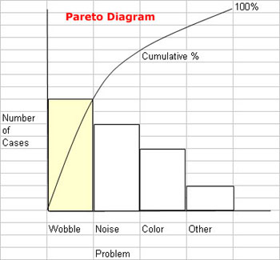

Project Quality Management
Policy management includes quality planning, quality assurance, and quality control. Quality planning entails identifying which quality standards are relevant to the project and determining how to satisfy them. Quality assurance entails evaluating overall project performance on a regular basis to provide confidence that the project will satisfy the relevant quality standards. Quality control entails monitoring specific project results to determine if they comply with relevant quality standards and identifying ways to eliminate causes of unsatisfactory performance. Quality management incorporates not just the product(s) of the project, but also the management of the project itself.
The idea is to continually improve, limit down time, minimize process variation, minimize rework, and eliminate anything that may be seen as defects by the customer. It is important to note that not all errors or variation in a final product are deemed to be defects by customers. It is also important to note that safety issues may cause a product to be seen as defective even if the customer does not see it as such. Either way, in almost every case the cost of prevention will be significantly less than the cost of defects.
| Costs of Prevention |
Costs of Defects |
| Additional planning |
Scrap |
| Education/training of team and stakeholders |
Rework |
| Inspection and testing of internal/external deliverables of project |
Repair |
| Improved designs for quality purposes |
Replacement of defective parts and inventory |
| Quality staff |
Repairs after delivery of product |
| Quality audits |
Loss of future business with stakeholder or with those relating to stakeholder |
| Quality plan and execution |
Legal issues for conconformance |
| |
Liability for defect |
| |
Risk to life and property |
In a simple nutshell, go with prevention rather than a cure.
Quality Framework
David Garvin proposes eight critical dimensions or categories of quality that can serve as a framework for strategic analysis: performance, features, reliability, conformance, durability, serviceability, aesthetics, and perceived quality.
Dimensions of Quality
Garvin's eight dimensions of qulaity as described by the University of Cambridge Institute for Manufacturing (n.d.):
- Performance. Performance refers to a product's primary operating characteristics. For an automobile, performance would include traits like acceleration, handling, cruising speed, and comfort. Because this dimension of quality involves measurable attributes, brands can usually be ranked objectively on individual aspects of performance. Overall performance rankings, however, are more difficult to develop, especially when they involve benefits that not every customer needs.
- Features. Features are usually the secondary aspects of performance, the "bells and whistles" of products and services, those characteristics that supplement their basic functioning. The line separating primary performance characteristics from secondary features is often difficult to draw. What is crucial is that features involve objective and measurable attributes; objective individual needs, not prejudices, affect their translation into quality differences.
- Reliability. This dimension reflects the probability of a product malfunctioning or failing within a specified time period. Among the most common measures of reliability are the mean time to first failure, the mean time between failures, and the failure rate per unit time. Because these measures require a product to be in use for a specified period, they are more relevant to durable goods than to products or services that are consumed instantly.
- Conformance. Conformance is the degree to which a product's design and operating characteristics meet established standards. The two most common measures of failure in conformance are defect rates in the factory and, once a product is in the hands of the customer, the incidence of service calls. These measures neglect other deviations from standard, like misspelled labels or shoddy construction, that do not lead to service or repair.
- Durability, A measure of product life, durability has both economic and technical dimensions. Technically, durability can be defined as the amount of use one gets from a product before it deteriorates. Alternatively, it may be defined as the amount of use one gets from a product before it breaks down and replacement is preferable to continued repair.
- Serviceability. Serviceability is the speed, courtesy, competence, and ease of repair. Consumers are concerned not only about a product breaking down but also about the time before service is restored, the timeliness with which service appointments are kept, the nature of dealings with service personnel, and the frequency with which service calls or repairs fail to correct outstanding problems. In those cases where problems are not immediately resolved and complaints are filed, a company's complaints handling procedures are also likely to affect customers' ultimate evaluation of product and service quality.
- Aesthetics. Aesthetics is a subjective dimension of quality. How a product looks, feels, sounds, tastes, or smells is a matter of personal judgement and a reflection of individual preference. On this dimension of quality it may be difficult to please everyone.
- Perceived Quality. Consumers do not always have complete information about a product's or service's attributes; indirect measures may be their only basis for comparing brands. A product's durability for example can seldom be observed directly; it must usually be inferred from various tangible and intangible aspects of the product. In such circumstances, images, advertising, and brand names - inferences about quality rather than the reality itself - can be critical.
To the above list one might also add value for money.
Quality Planning
In quality planning you identify those quality standards that are most important and decide how to satisfy them. In relation to products this has to do with conformance to the requirements and fitness for use. Quality is planned in, not inspected in.
Quality Assurance
With quality assurance you continually evaluate project performance in relation to quality and ensure it is meeting established quality standards. You will want to consider lessons learned from previous or similar projects when discussing methods for ensuring quality on the current project. You may also want to address quality improvement possibilities as well.
Quality control
With quality control you monitor project or phase results to determine if they are in compliance with the established quality standards. If something is not satisfactory you find the cause and determine an appropriate course of action to remedy the problem. This is commonly done by inspections, reviews, audits, and walkthroughs.
Modelling and Decision Support Tools
Balanced Scorecard
With a balanced scorecard the principle idea is to get multiple perspectives and to come to agreement on the relative weight given to metrics used in decision making. There are four important perspectives that should be included:
- How do customers see us? - Customer perspective
- What must we excel at? - Internal perspective
- Can we continue to improve and create value? - Innovation & learning perspective
- How do we look to shareholders? - Financial perspective
Cause and Effect Diagram (Also known as a Fishbone Diagram or ishikawa diagram)
A cause and effect diagram, also known as a Fishbone diagram or Ishikawa diagram, is described in the Process Management Issue Identification section but is also actively used in quality management.
Pareto diagram analysis (also known as a Pareto chart)
Pareto diagrams are named after Vilfredo Pareto. They are a useful tool for determining areas to concentrate on is a Pareto diagram. This is related to Pareto's law (also known as the 80/20 rule), which states, "A minority of input produces the majority of results." What this means for quality control is that commonly a small number of causes produce a majority of the problems. Pareto believed there was a predictable imbalance--the premise is that 80% of problems are produced by a few critical causes, typically about 20%. This 80/20 principle or standard has been expanded into other areas of management as well..
A Pareto diagram is a histogram ordered by frequency of occurrence. Here is a sample Pareto diagram:

W. Edward Deming
"Survival is optional" --W. Edward Deming
W. Edward Deming is seen by some as the father of quality management. If not that, then at least the father of Total Quality Management (TQM), which has its foundatinons in the principles of Edward Deming and his work with Japanese industries.
Deming is perhaps most famous for his fourteen points on quality:
- Create constancy of purpose toward improvement of product and service, with the aim to become competitive and to stay in business, and to provide jobs.
- Adopt the new philosophy. We are in a new economic age. Western management must awaken to the challenge, learn their responsibilities, and take on leadership for change.
- Cease reliance on mass inspection to achieve quality. Eliminate the need for inspection on a mass basis by building quality into the product in the first place.
- End the practice of awarding business on the basis of price tags. Instead, minimize total cost. Move toward a single supplier for any one item, on a long-term relationship of loyalty and trust.
- Improve constantly and forever the system of production and service, to improve quality and productivity, and thus constantly decrease costs.
- Institute training on the job.
- Institute leadership. The aim of supervision should be to help people and machines and gadgets to do a better job. Supervision of management is in need of overhaul, as well as supervision of production workers.
- Drive out fear, so that everyone may work effectively for the company.
- Break down barriers between departments. People in research, design, sales, and production must work as a team, to foresee problems of production and in use that may be encountered with the product or service.
- Eliminate slogans, exhortation, and targets for the work force asking for zero defects and new levels of productivity. Such exhortations only create adversarial relationships, since the bulk the causes of low quality and low productivity belong to the system and thus lie beyond the power of the work force.
- Eliminate work standards (quotas) on the factory floor; eliminate management by objectives; and, eliminate management by numbers and numerical goals. Substitute leadership.
- Remove barriers that rob hourly employees, management, and engineering of their right to pride of workmanship. This means, inter alia, abolishment of the annual review or merit rating and management by objectives. The responsibility of supervisors must be changed from mere numbers to quality.
- Institute a vigorous program of education and self-improvement.
- Put everybody in the company to work to accomplish the transformation. The transformation is everybody's job.
Deming also describes seven deadly diseases that impact quality management efforts. The seven deadly diseases include:
The Seven Deadly Diseases
1- Lack of constancy of purpose
2- Emphasis on short-term profits
3- Evaluation of performance, merit rating, or annual review
4- Mobility of top management
5- Management based on visible figures alone
6- Excessive medical costs
7- Excessive costs of warranty, fueled by lawyers who work on contingency
As Deming saw it, there were some key business obstacles that lead to poor quality management:
- Neglecting some long-range planning and transformation
- Relying on technology to solve problems
- Seeking examples to follow rather than developing solutions
- Maintaining that "Our problems are different"
- Blaming the work force for the problem
References
Garvin, D. (1987). Compmeting on the eight dimensions of quality. Harvard Business Review.
University of Cambridge Institute for Manufacturing (n.d.). Quality Framework. Retrieved May 1, 2022 from https://www.ifm.eng.cam.ac.uk/research/dstools/quality-framework/